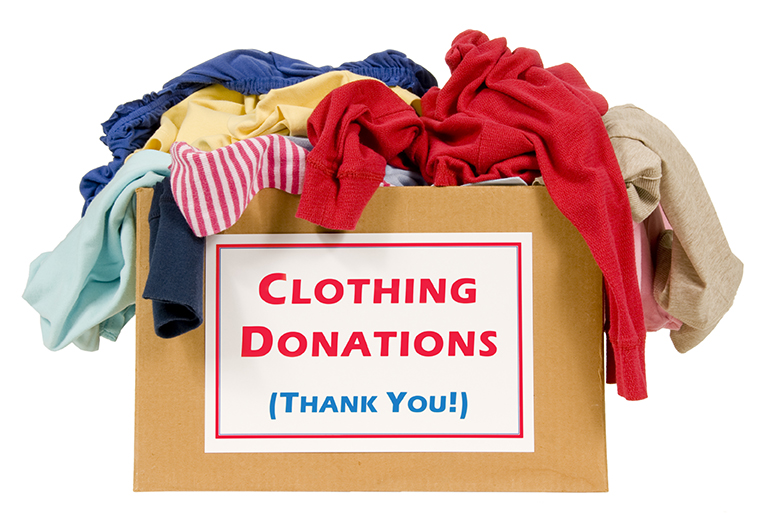
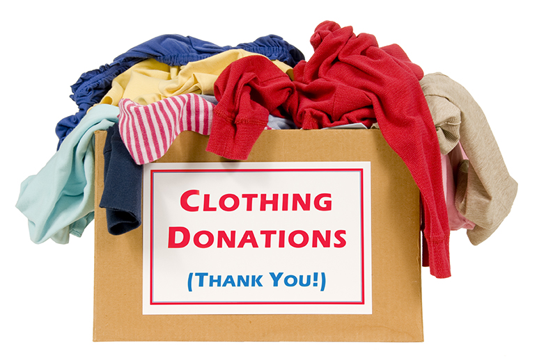

Join Us in Creating Positive Change!
At Threads Of Kindness, we are committed to supporting NGOs like yours in their mission to uplift communities and create lasting impact. Through our platform, we facilitate the collection and delivery of non-monetary donations, including clothing items, to organizations in need.
Why Partner with Us?
Efficient Donation Management: We specialize in efficiently collecting donations from various sources and ensuring their safe delivery to NGOs. By partnering with us, you can streamline your donation process and access a reliable supply of clothing items to support your beneficiaries.
Increased Visibility: Showcase your organization and its impactful work to a broader audience. Through our platform, you'll gain exposure and raise awareness about the causes you support, attracting more support from donors and volunteers alike.
Corporate and Volunteer Support: Tap into our network of corporates and volunteers eager to contribute to meaningful causes. Whether it's through corporate donations, employee volunteering initiatives, or hands-on support from dedicated volunteers, we can help strengthen your organization's capacity to fulfill its mission.
Collaborative Opportunities: Join a collaborative ecosystem where NGOs, donors, volunteers, and corporate partners work together towards common goals. By sharing resources, best practices, and solutions, we can amplify our impact and create sustainable change.
How to Get Involved?
Ready to join forces with us? Get started by reaching out via email at infotok@gmail.com. Let's work together to spread happiness and create positive change in our communities!
 
